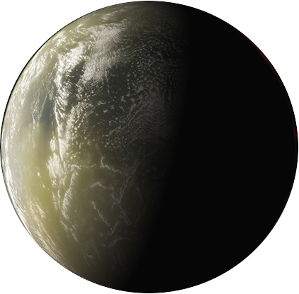
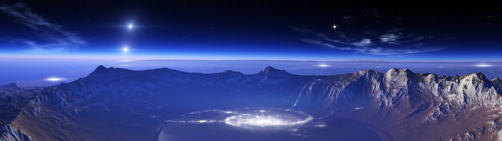

Sometime this year the two thousandth planet will be discovered outside our solar system. The vast range of discoveries that have been confirmed are almost certainly outliers in the billions of worlds thought to exist, brought into focus by relatively weak technologies that are biased in favor of anomalies. So far, these include:
Pulsar timing remains the easiest method to find exoplanets, but the inimical nature of their parent stars make the worlds extremely unlikely candidates as sources for life. More recent detection techniques have their own limitations:
The measurement of a planet's orbital tug on its star, causing a rhythmic "wobble" in the position of the parent star. Due to their differences in mass, the technique is best at detecting exoplanets that are very large (Jupiter mass or above) and/or very close to their star.
A exoplanet moving in the same plane as our line of sight will partially “eclipse†its star during moments of its orbit. If this dip in perceived brightness occurs at regular intervals, an orbiting body can be inferred. Obviously the larger the planet and/or the further it orbits from its star, the greater the dip in received light and the easier the detection
A planet will reflect the light of its star in phases as it orbits, just as the moon does as it circles the Earth. While the amount of reflected light will be very small compared to the central star (the common comparison is the ability to perceive the glow of a lit match held at arms length from a lighthouse beam), the method is useful for large Jupiter-sized bodies orbiting relatively close to their host star.
Light can be bent by its transmission medium (such as water) or by passing beside a large gravitational mass. The most extreme variations of the latter effect are observed around supermassive black holes and galaxies, but planets have the same effect on starlight, albeit much more subtly.
Because such alignments of exoplanets and background stars are very rare, the most likely opportunities come from observations directed toward the galactic core, where the density of stars is highest.
Exoplanet detection is a long, slow process: a candidate will need to complete at least one full orbit (its own relative “yearâ€) before it can be confirmed. While terrestrial equipment has been used in the hunt for planets, the greatest gains in exoplanet detection have come from satellites, particularly the Kepler NASA space observatory and COROT (led by the French Space Agency). Other projects with greater resolution, such as the Terrestrial Planet Finder and Darwin, are unfortunately on hold or cancelled at this time. The James Webb Space Telescope, a visible-wavelength-to-infrared detector, should also have the opportunity for imaging planets after it is launched in 2018.
So far we have have a dataset of just one planet confirmed to support life: we know it exists on Earth. The flourishing evolutionary diversity of life on Earth is entirely dependant on water, which implies that other planets capable of supporting biological life must be within the “habitable zone†of their parent stars (neither so close as to boil, or freezing when they are too far out). Other heating methods to produce liquid water are possible, from vulcanism to the gravitational tugging of a large planet on a smaller ice-covered worldlet, seen in Saturn's moons Enceladus and Mimas.

While projects such as SETI have so far failed to detect the presence of intelligent extraterrestrial life using radio frequencies, there exists the intriguing possibility that we may detect intelligent life by observing the atmosphere of an exoplanet.
Such detection is not likely to be achieved by seeing the night-glow of an alien city through a telescope: the power to resolve those kinds of details is more than a century away, if it is achievable at all. Rather, alien life might be inferred through the presence of elements, via spectrography.
As a planet transits past its parent star, light is refracted through its atmosphere. By teasing apart the spectrum of the light received here on Earth and observing the absorption lines, it is possible to determine the chemical composition of a planet’s atmosphere, together with information like wind speed and direction. As our instruments become more precise, we should be able to resolve the atmospheres of ever-smaller planets… and if we ever find oxygen, or a high proportion of methane, we will have found life, as it is only biological life that can produce those elements.
Taking this a step further, we should also be able to detect the presence of artificial chemicals in an atmosphere, such as vinyl chloride mononomers. This will be an unmistakable sign of an industrial society, as no natural process that produces such compounds.
Given the increasingly desperate state of our own planet’s ecosystem, it is deeply ironic that our discovery of intelligent life elsewhere in the Universe may come from the detection of another world’s pollution.
Images by Bille Lille, licensed under Creative Commons. FORM LINK